독립 검증 72개 상황. 원인은 실제 이상·원인 확인 시점의 조건부 평가입니다. 상세 과정·혼동 사례는 같은 폴더의 분석결과_과정설명.md를 확인하세요.
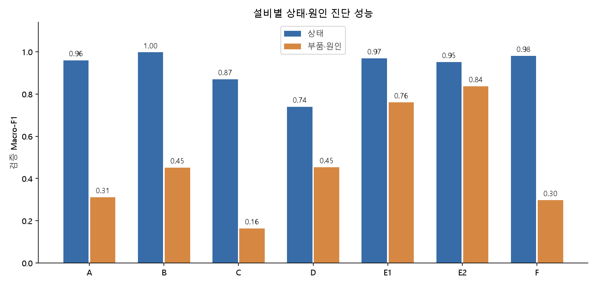
| 설비 | 목표 | 평가 행 | 평가 상황 | 정확도 | Macro-F1 | 기준 F1 | F1 하한 | F1 상한 | 자동 채택률 | 채택 정확도 | 확률 오차 |
|---|---|---|---|---|---|---|---|---|---|---|---|
| A | 상태 | 62208 | 72 | 98.9% | 0.960 | 0.323 | 0.912 | 0.989 | 99.4% | 99.0% | 0.001 |
| A | 부품·원인 | 3045 | 5 | 37.3% | 0.312 | 0.139 | 0.082 | 0.434 | 0.0% | 보류 | 0.123 |
| B | 상태 | 31104 | 72 | 99.9% | 0.997 | 0.243 | 0.745 | 0.999 | 98.2% | 99.9% | 0.000 |
| B | 부품·원인 | 1496 | 6 | 79.5% | 0.452 | 0.152 | 0.201 | 0.499 | 72.1% | 91.1% | 0.130 |
| C | 상태 | 62208 | 72 | 91.9% | 0.871 | 0.223 | 0.644 | 0.931 | 92.9% | 94.1% | 0.051 |
| C | 부품·원인 | 10445 | 19 | 23.2% | 0.164 | 0.090 | 0.091 | 0.228 | 0.0% | 보류 | 0.110 |
| D | 상태 | 62208 | 72 | 99.6% | 0.740 | 0.243 | 0.731 | 0.746 | 97.8% | 99.7% | 0.002 |
| D | 부품·원인 | 2995 | 6 | 73.6% | 0.454 | 0.158 | 0.217 | 0.485 | 92.9% | 74.8% | 0.162 |
| E1 | 상태 | 2592 | 72 | 99.2% | 0.969 | 0.324 | 0.935 | 0.993 | 96.9% | 99.2% | 0.003 |
| E1 | 부품·원인 | 109 | 5 | 91.7% | 0.761 | 0.105 | 0.377 | 0.769 | 78.9% | 95.3% | 0.066 |
| E2 | 상태 | 2592 | 72 | 98.6% | 0.951 | 0.324 | 0.863 | 0.987 | 96.8% | 99.0% | 0.005 |
| E2 | 부품·원인 | 121 | 5 | 90.9% | 0.837 | 0.059 | 0.446 | 0.886 | 90.9% | 90.9% | 0.062 |
| F | 상태 | 10368 | 72 | 99.4% | 0.981 | 0.323 | 0.938 | 0.997 | 99.4% | 99.5% | 0.002 |
| F | 부품·원인 | 534 | 6 | 29.0% | 0.298 | 0.086 | 0.072 | 0.405 | 0.0% | 보류 | 0.154 |
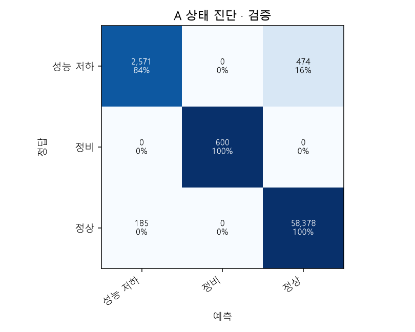
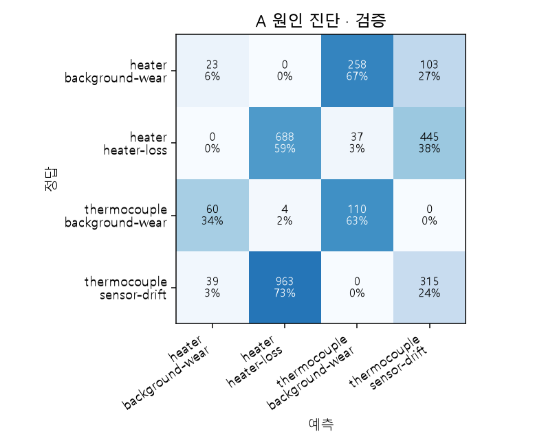
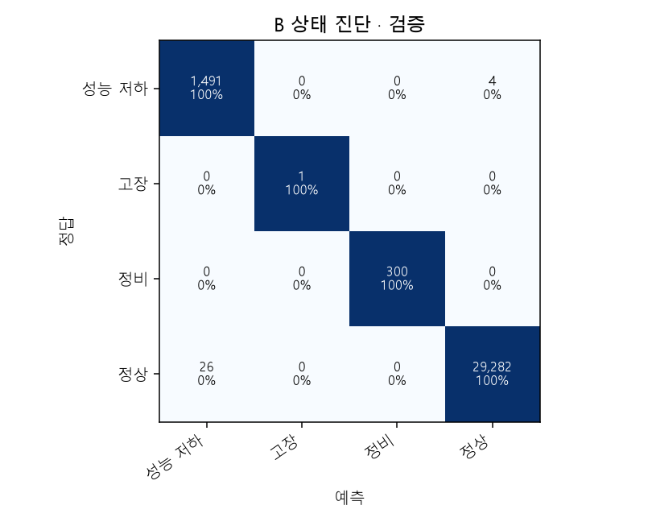
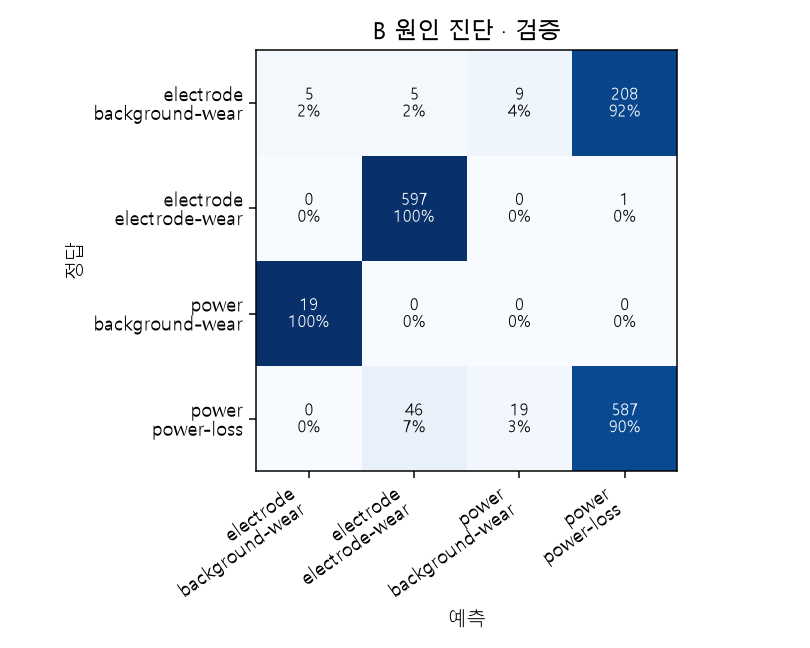
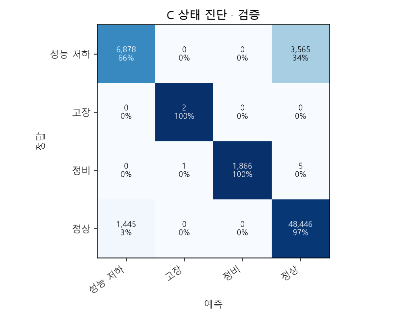
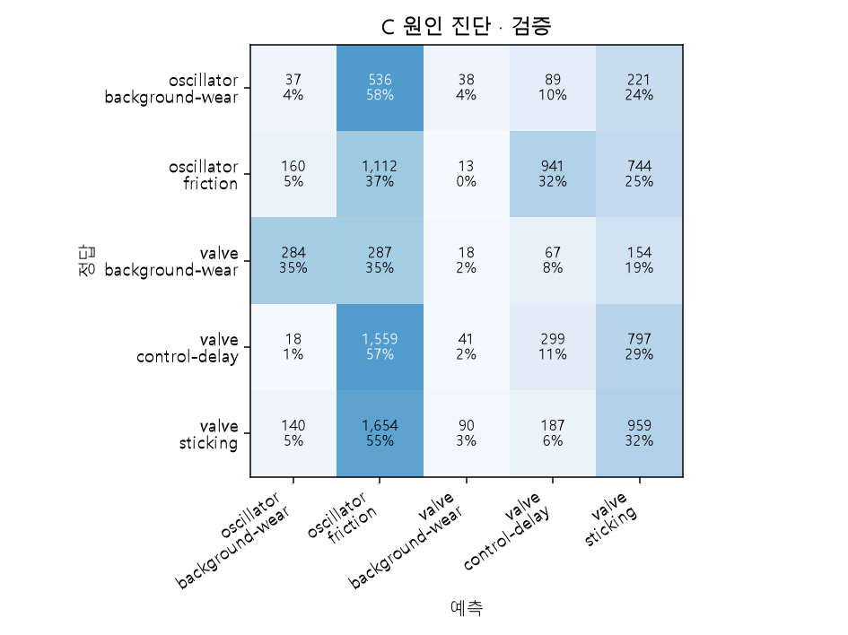
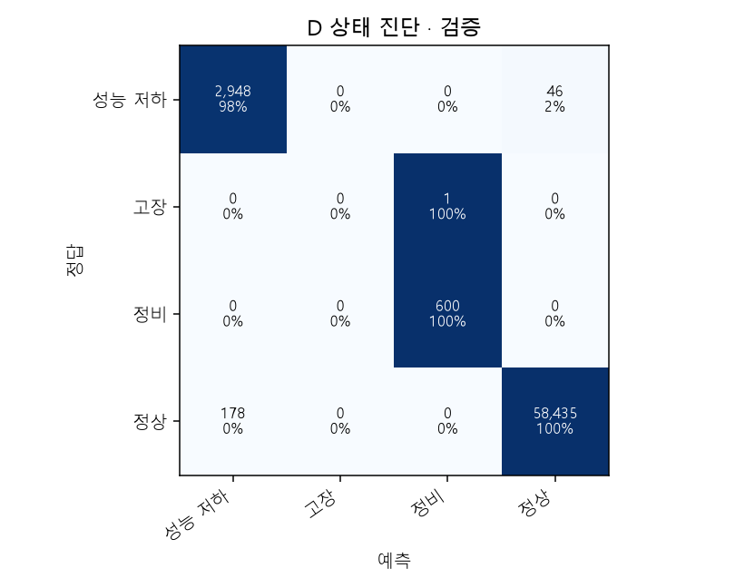
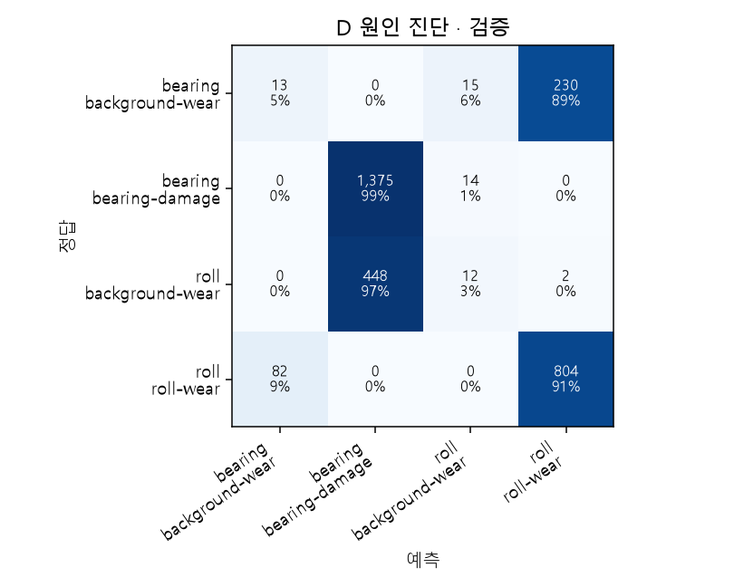
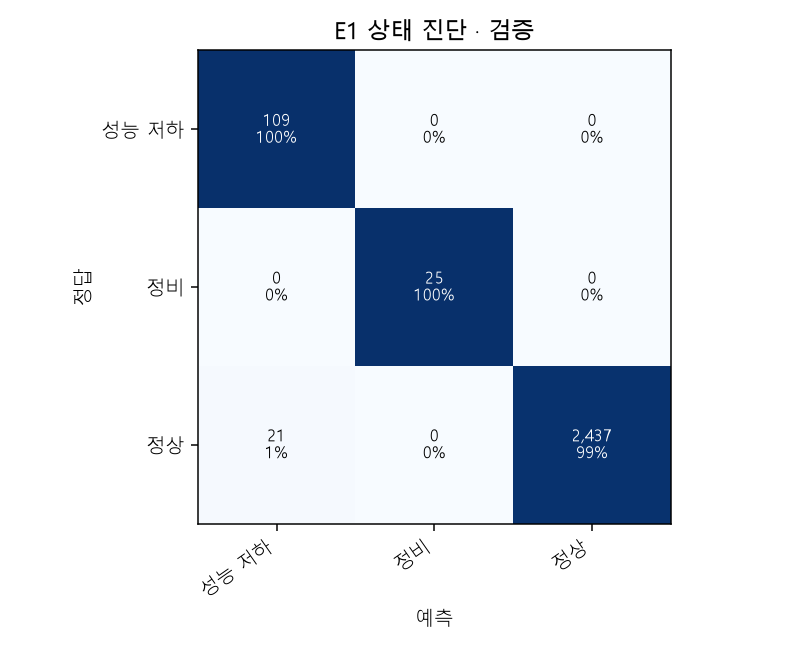
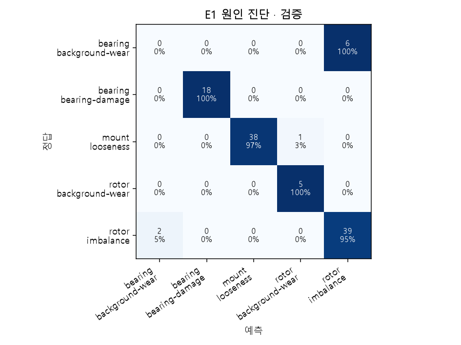
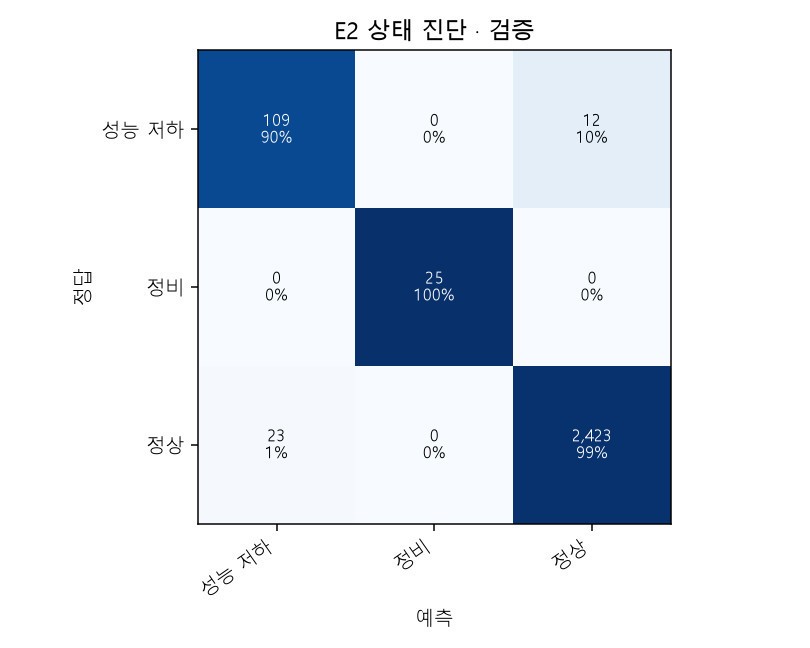
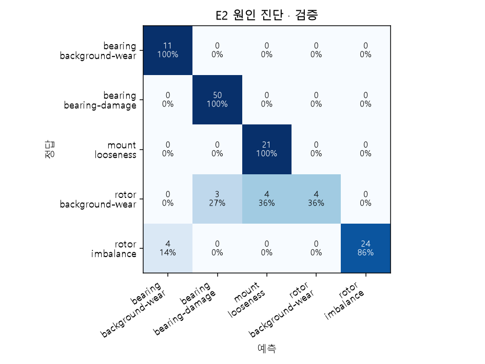
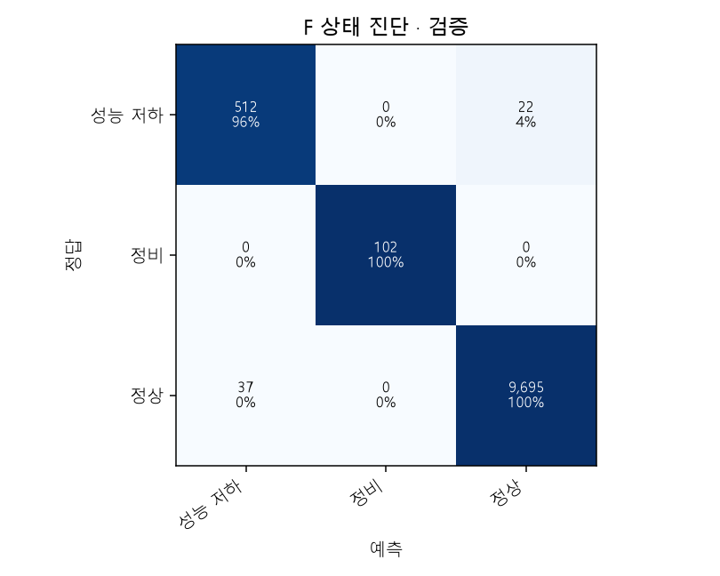
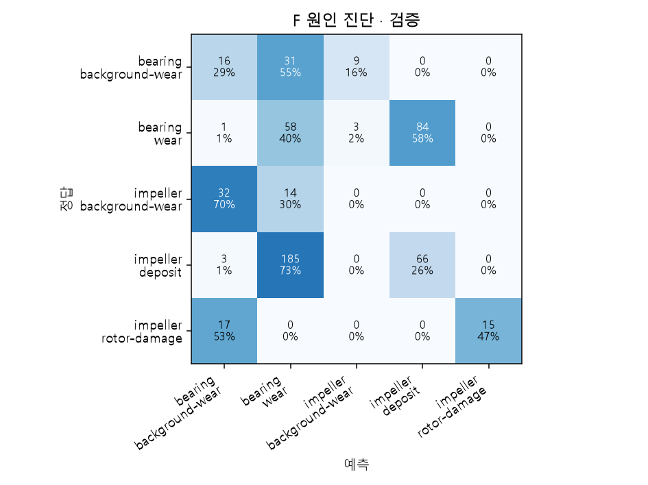